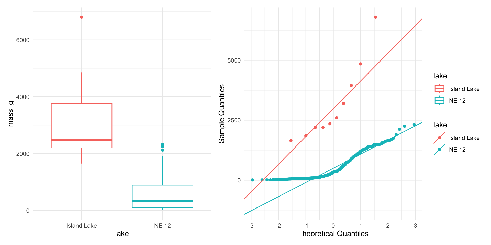

# A tibble: 6 × 5
sampling_site species length_mm mass_g lake
<chr> <chr> <dbl> <dbl> <chr>
1 I8 lake trout 515 1400 I8
2 I8 lake trout 468 1100 I8
3 I8 lake trout 527 1550 I8
4 I8 lake trout 525 1350 I8
5 I8 lake trout 517 1300 I8
6 I8 lake trout 607 2100 I8 Lecture 07
Lecture 6 - A Brief review
- Hypotheses
- 1- and 2-sided T tests
- Power - what is it and why talk about it.
- Assumptions of parametric tests
- What next — WHEN ASSUMPTIONS FAIL!
we will always cover parametric tests
then we will cover non parametric approaches
later on we will explore other approaches to use the appropriate underlying distribution that is not normal but Poisson or other

Lecture 7 overview
What we will cover today:
- What are the assumptions again and how do you assess them
- What to do when assumptions fail
- Robust tests
- Rank-based tests
- Permutation tests
Lets work with the Lake Trout data as the weights are pretty cool and the assumptions may or may not hold
This is easily translated into any of the other dataframes you might want to use
lake trout

Parametric versus non-parametric tests
T-tests are parametric tests
- Parametric tests:
- specify/assume probability distribution from which parameters came
- Basic assumptions of parametric t-tests:
Random sampling
Normality
Equal variance (or Welches T Test)
No outliers
- Non-parametric tests: no assumption about probability distribution/normality
- Mukasa et al 2021 DOI: 10.4236/ojbm.2021.93081

Assumptions of parametric tests - Overview
- If assumptions of parametric test violated, test becomes unreliable
- This is because test statistic may no longer follow distribution
- Most parametric tests robust to mild/moderate violations of normality assumptions

Assumptions of parametric tests - Random Sampling
- Basic assumptions of parametric t-tests:
- Random sampling
- Normality
- Equal variance
- No outliers
- Random sampling:
samples are randomly collected from populations; part of experimental design
Necessary for sample -> population inference

Testing for Outliers
- Basic assumptions of parametric t-tests:
- Normality
- equal variance
- random sampling
- no outliers
- No outliers: no “extreme” values that are very different from rest of sample
- Graphical tests: boxplots, histograms
- “Formal tests”: Grubb’s test - no one really does this
- Note: outliers a problem for non-parametric tests as well

QQ-plots: tool for assessing normality
- On x- theoretical quantiles from SND
- On y- ordered sample values
- Deviation from normal can be detected as deviation from straight line

Data Transformations
- In some cases, data can be mathematically “transformed” to meet assumptions of parametric tests
- this can be done in r and usually involves
- log10 transformations
- square root transformations
- and many others… I will have a description soon
Robust tests - Welch’s T-Test
- Welch’s t-test
common “robust” test for means of two populations
Robust to violation of equal variance assumption, deals better with unequal sample size
Parametric test (assumes normal distribution)
Calculates a t statistic but recalculates df based on samples sizes and s

1. Standard T-Test
Strengths:
- High statistical power when assumptions are met
- - Well understood and widely accepted
Weaknesses:
- - Sensitive to violations of normality, equal variance
- - Heavily influenced by outliers
2. Welch’s T-Test
- Strengths:
- - Robust to violations of equal variance assumption
- - Handles unequal sample sizes well
- - Still parametric (assumes normality)
- Weaknesses:
- - Slightly less powerful than standard t-test when variances are equal
- - Still assumes normal distribution
3. Mann-Whitney-Wilcoxon Test
- Strengths:
- - Non-parametric: doesn’t assume normal distribution
- - Robust against outliers
- - Works with ordinal data
- Weaknesses:
- - Less statistical power than parametric tests
- - Still assumes similar distributions and approximate equal variance
- - Tests median differences rather than mean differences
4. Permutation Tests
- Strengths:
- - Distribution-free: doesn’t assume a specific distribution
- - Can be applied to many types of test statistics
- - Handles small sample sizes well
- - Directly estimates p-values through resampling
- Weaknesses:
- - Computationally intensive
- - Assumes exchangeability under the null hypothesis
- - Requires similar distributions and equal variance